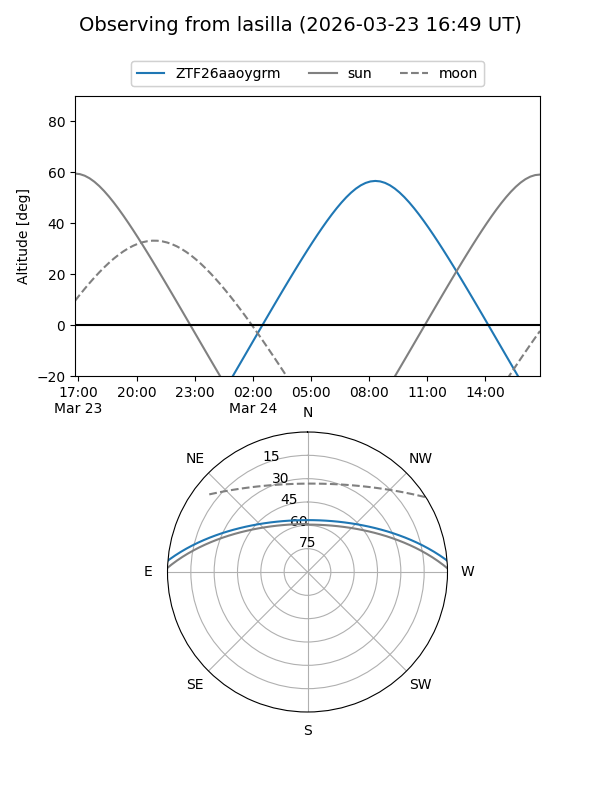
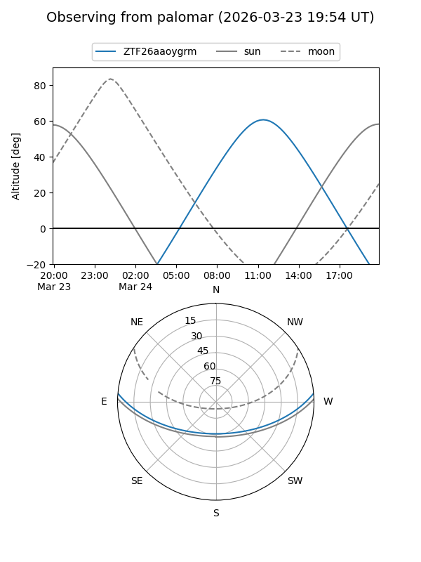

ZTF26aaoygrm
Target ZTF26aaoygrm at 2026-03-23 12:59
Aliases and brokers:
FINK: link
Lasair: link
ALeRCE: link
alt names
ZTF26aaoygrm (ztf,fink_ztf)
Coordinates:
equatorial (ra, dec) = 235.6427,+4.19401
equatorial (HMS+DMS) = 15:42:34.24,+04:11:38.45
galactic (l, b) = (11.2975,+43.21884)
Flags:
Photometry:
last ztfg=17.75
1 ztfg detections
Lightcurve
Visibility


Additional plots